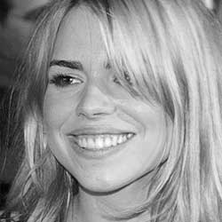

| |
| Home The Doctors The Companions The Villains Show History |
Billie PiperBillie Paul Piper (born Leian Paul Piper; 22 September 1982) is an English singer, dancer and actress. She made her debut in Scratchy & Co. (1995-1998), and at the age of 15, she signed a recording contract and released her debut single "Because We Want To", which debuted at number one in the UK and made her the youngest artist ever to debut at number one. The single was followed by Piper's album Honey to the B (1998), which was certified double platinum by the Recording Industry Association of New Zealand (RIANZ) and platinum by the British Phonographic Industry (BPI). In 2000, she released her second album, Walk of Life. In 2003, she retired from the recording industry and launched a successful acting career. Piper's transition into acting began in 2004. Her most famous role is as Rose Tyler, companion to The Doctor from 2005 to 2006, in the BBC sci-fi series Doctor Who, a role she reprised in 2008, 2010, and 2013. In 2007, Broadcast magazine listed Piper at no. 6 in its "Hot 100" list of influential on-screen performers; she was the top woman on the list. From 2007 until 2011, she starred as the high-flying escort Belle de Jour in the TV seriesSecret Diary of a Call Girl. She currently stars as Brona, an Irish immigrant, in the horror TV series Penny Dreadful. |
|
Kayleen Garcia |
Ann Marie Skjold |
Content derived from the Doctor Who Wikipedia. |